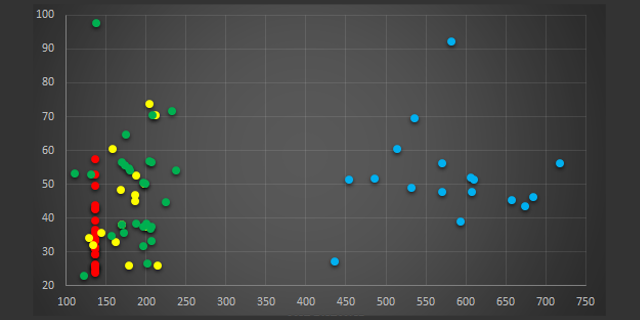

Game
Game by Joseph. Assignment 3. This assignment aquainted Joseph with the skills he needed to start using Perlenspiel.
Game
Game by Lambert. Assignment 3. This assignment will acquainted Lambert with the skills he needed to start using Perlenspiel.
Maze
Maze. Assignment 6. This assignment will started us thinking about how to use data analytics to inform our game designs. Additionally it give us our first taste of game instrumentation.

Assignment 6 Presentation
We identify our experience goals and describe our strategy for measurably achieving them. We explain how we instrumented the sample game and show graphs (based on actual captured data) of the sample game's baseline (pre-modded) behavior. We show graphs (based on actual captured data) that demonstrate how our mods achieved our experience goals (or failed to do so).
Assignment 8 Presentation
We were tasked with creating a casual, mobile-friendly game with two or more measurable experience goals. Our game must satisfy the following criteria: easy to learn, non-twitch, and playable in short time bursts. We need built-in prompts and/or tutorials that should teach new players how to play. Any instructions provided on the cover image, if any, must be sparse. Players should be able to look away from the game without losing. Most mobile players spend only a few minutes in a single session.
The Three Bead Game (Working Title)
Assignment 9. The prototype of our casual game as we described in Assignment 8. A working prototype of the casual game we described in the treatment created for Assignment 08, incorporating the database functions we will need to record and analyze playtest behavior.

The Three Bead Game v2.0 (Working Title)
Assignment 11. We refined the casual game we prototyped in Assignment 9 by incorporating the user feedback and telemetry we collected during in-class playtesting.
Beadjeweled (vFinal)
Assignment 12. We modified our game to incorporate any suggestions we felt were appropriate and useful. Finally, we applied a layer of polish to our game.
Assignment 12 Presentation
We updated the treatment presentation we created for Assignment 8 to reflect the way our final game actually turned out.
Assignment 15 Presentation
We prepared a treatment presentation that briefly describes the storygame we have chosen to build. The game we have chosen to make is "Merlin Saves King Vortigern
(Working title)". The tagline of our game is "The pool is the emblem of this world, and the tent that of your kingdom."

Merlin and the Dragons (Prototype)
Assignment 16. We created a working prototype of the game we described in the treatment created for Assignment 15.